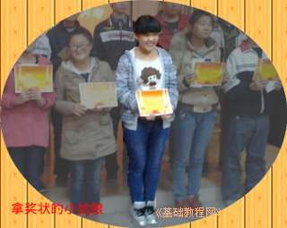

2014-2015 第一学期八年级图像处理教学设计
作者：TeliuTe 来源：基础教程网
十六、亮度和裁切 返回目录 下一课
（一）教学设计
1、学习目标：gimp基本操作，图片处理，图像特效
2、注意事项：绕过弯来，既不要跳也不要落，一楼过了二楼
3、教学过程：
1）教师准备学案和板书；
2）学生整队进入，开机抄黑板上笔记；
3）教师讲解板书演示操作；
4）学生打指法、日志、完成操作；
5）教师打勾记录学生指法成绩，检查日志和操作；
注：学生抄完笔记就开始打指法、日志，老师讲完后再继续完成；
（二）板书设计(学生笔记)
16亮度和裁切
1.起点终点重叠闭合，点出选区
2.反选中背景，调暗背景
3.裁切先作出选区蚂蚁线
4.裁切按照边界直线剪切
操作图示：

（三）课后记
第16课学会调整亮度，裁切
1、打开图像，剪刀，反转
2、点菜单“颜色，亮度-对比度”，调暗
3、点椭圆选框，圆框，“图像，裁切”
4、编辑，清除，填色，签名
--
2014年11月07日 星期四 19:14
--
看了下以前的课，把亮度对比度学习一下
选择的时候，刚好用上节课的剪刀工具复习一下
--
内容看着有些多，不过看学生做的还可以，慢慢可以接受了
做起来安安静静的一开始，养成习惯了，或者就是做完开网
--
3班上节课训了一顿，这节课让整队，男生先整好进来，女生等着也整队，再进来
下节课也要养成习惯，让整队进来，这个班每次最后打扫卫生
--
抄笔记的时候就说好，接着上节课的，第一条是上节课的操作
第二条是这节课的，亮度对比度，然后是裁切，第四步是清除
--
除了剪刀工具是在工具箱里，其他的都是在菜单
颜色、图像、编辑，三个菜单别搞混了，对上号
--
意思是突出重点，背景暗下去，跟着意思做
准备图片大一些，别人处理过的别做，有人物有背景的图片
--
提前把代理程序终端打开运行好，输好密码等会按下回车就可以运行
裁切的时候用椭圆选框，做出一个圆形图案，四个角用上节课的图案填充，效果也很好
返回目录 下一课
本教程由86团学校TeliuTe制作|著作权所有
基础教程网：http://teliute.org/
美丽的校园……
转载和引用本站内容，请保留作者和本站链接。